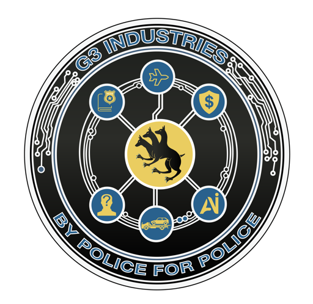

Email-based officer outreach
Coordinators may need to send availability emails and wait for officers to reply before coverage is clear.

G3 Industries presents
Concept workflow for discussionA platform that helps Special Olympics Delaware coordinators create and manage events, assign volunteer time slots, and give officers a simple way to sign up from their phones, while providing real-time visibility into staffing needs, volunteer hours, and event participation.
Concept workflow for discussion. Final screens, labels, and implementation details would be refined during discovery.
Concept / not final UI
Create the request with event details, contact, duties, time slots, and coverage needs
Publish the approved opportunity to the officer dashboard and send a notification
Officer reviews the details, selects an available slot, and signs up
Coordinator tracks coverage status, contacts, and volunteer hours
Operational challenge
When event needs arrive through email, calls, or shared lists, the coordinator has to turn each request into confirmed coverage while keeping everyone informed.
Coordinators may need to send availability emails and wait for officers to reply before coverage is clear.
Signups can end up tracked in spreadsheets, notes, or message threads instead of one shared view.
Officers may not know whether to contact the event manager or the administrator for day-of details.
Participation history and volunteer hours can be difficult to verify after the event is over.
Proposed solution
The workflow follows a familiar request, publish, signup, and tracking pattern.
The administrator enters the event, location, point of contact, duties, time slots, and number of officers needed.
Once approved, the volunteer opportunity appears in the officer dashboard and triggers an email or SMS notification.
The officer reviews the event details, selects an available slot, and confirms the volunteer assignment.
The administrator sees coverage status, receives updates, and keeps volunteer hours connected to each officer profile.
Admin tools
A possible coordinator view could centralize the request queue, published opportunities, signup status, and volunteer hour history without locking in a final interface too early.
Illustrative workflow view
Review incoming volunteer needs and see which requests need action.
Keep a lightweight view of opportunities currently visible to officers.
Understand who has signed up and what still needs coverage.
Support availability notices, fill-status updates, and reminders without relying on separate message threads.
Associate participation and volunteer hours with the correct officer profile.
Prepare participation summaries or exports when leadership needs event coverage or volunteer-hour totals.
Event date - Morning shift
Event date - Afternoon shift
Choose a volunteer time slot
Mobile-first access
Published volunteer requests appear in the officer dashboard. Officers can review the details, select a time slot, and confirm participation without waiting for a coordinator to update a list manually.
Pilot approach
The pilot can focus on proving the request-to-signup workflow before committing to a larger platform build.
Start with the coordinator's real process, confirm the officer signup model, and identify integration or security needs early.
Focus the first quote on intake, publishing, officer signup, notifications, and basic participation tracking.
After a few events, refine reporting, user roles, data retention, and any integrations based on actual usage.
Confirm the workflow, user model, security requirements, and pilot scope needed for a realistic estimate.
Build the smallest useful version around request creation, officer signup, notifications, and coordinator visibility.
Use selected volunteer events to test officer adoption, coordinator workload, and coverage tracking.
Use pilot findings to decide what should become permanent, what needs refinement, and what can wait.
Stakeholder value
Less manual follow-up, clearer coverage status, and a single place to track requests.
A simpler way to see available opportunities, understand the details, and sign up quickly.
Better visibility into participation, volunteer hours, and event readiness.
Clearer communication around coverage needs, point of contact, and staffing status.
Why G3
G3 can approach this as an operational workflow challenge first: requests, approvals, officer visibility, signup tracking, and administrative reporting.
Experience translating public-safety processes into practical digital workflows.
Ability to start with a focused pilot instead of forcing a full platform decision upfront.
Emphasis on coordinator usability, officer adoption, and clean administrative visibility.
Discovery before quote
These questions help turn the concept into a realistic pilot scope and quote.
Does the coordinator work from an event calendar, or does an outside event contact submit a request form?
Should the administrator create every volunteer request, or should submitted requests arrive for review and approval?
Is there an existing officer roster, or would officers create accounts that need to be reviewed before signup?
How many officers, coordinators, event contacts, and administrators should the system be built to support?
Define the event details, signup records, contact information, volunteer hours, and reporting history that matter.
Decide what should remain available for reporting, auditing, officer history, and future planning.
Confirm whether an IT department, system owner, or outside vendor needs to review access, hosting, or security.
Decide whether events are public to view, login-only, or visible to everyone but restricted to verified officer signups.
Recommended next step
Since Special Olympics Delaware has asked G3 to quote a pilot, the next step is to confirm the administrator workflow, officer verification model, data requirements, and first-event pilot scope.